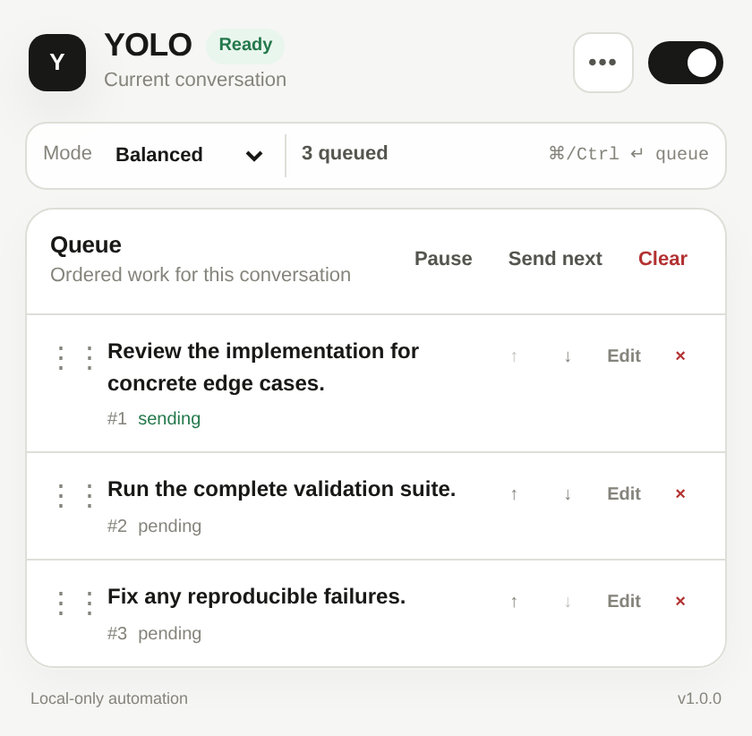

Scene 2 · Queue
Queue what
should happen
next.
Y
YOLO
Ready
Current conversation · Balanced
0 queued
⋮⋮
Review the implementation for concrete edge cases.
#1
sending
↑
↓
Edit
×
⋮⋮
Run the complete validation suite.
#2
pending
↑
↓
Edit
×
⋮⋮
Fix any reproducible failures.
#3
pending
↑
↓
Edit
×
Scene 4 · Bounded workflow
Bounded workflows.
Visible state. Your controls.

Real product capture · popup.html + styles.css
◆ loop
Audit reliability gaps
running
· iteration 1/4
running
· iteration 2/4
paused
· iteration 2/4
Pause
Edit
Stop